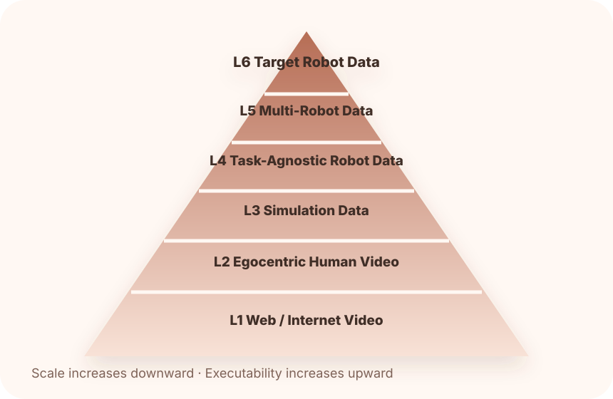

真实机器人遥操作
提供最可信的动作监督与目标本体执行接口，但成本最高、任务覆盖最窄。
High executabilityWAM 的关键困难不是“是否能生成未来”，而是能否获得、组织和对齐足够高质量的世界—动作数据。
| 模型 | 学习目标 | 数据需求 | 核心难点 |
|---|---|---|---|
| WM | 预测未来状态 | 视频、状态转移、动作条件 | 可以不直接输出动作 |
| VLA | 视觉语言到动作 | 视觉-语言-动作三元组 | 未来物理演化通常不内生 |
| WAM | 联合预测未来与动作 | 视频-动作-语言-未来状态联合数据 | 时间对齐、模态耦合、本体一致性、可执行性 |
提供最可信的动作监督与目标本体执行接口，但成本最高、任务覆盖最窄。
High executability扩展真实场景和长时行为，适合学习操作过程，但存在 human-to-robot embodiment gap。
Human priors提供可控 physics、密集状态和低成本扰动，但有 sim-to-real gap。
Dense labels规模最大，提供开放世界动态先验，但缺少机器人动作和可执行性约束。
Scale越往下规模越大、动作监督越弱；越往上可执行性越强、采集成本越高。

数据集卡片由 data/datasets.json 自动生成。
| 问题 | 目标 | 代表方向 / 论文 |
|---|---|---|
| 视觉—动作 tokenization | 将异构机器人动作和视觉变化映射到可迁移表示空间 | RepWAM, latent action tokenizers |
| 异质监督融合 | 让 video-only、robot trajectories、failure data 等共同训练 | UWM, DreamZero, MotuBrain, τ₀-WM |
| 无动作视频伪动作 | 从普通视频中提取 latent action、手部轨迹或状态转移 | LAWM, VLA-JEPA, inverse dynamics |
| 长时序压缩 | 将长轨迹组织为子任务、上下文和 action chunks | DreamZero, MotuBrain, Fast-WAM |
| 数据质量评分 | 清洗时间戳偏移、no-op、失败未标注、语言粗糙等问题 | DROID relabeling, AgiBot verification pipelines |
如何定义真正跨本体的统一动作语法？
如何判断一段无动作视频是否对机器人控制有用？
如何建立 WAM 的数据混合律，而不是只比较数据集规模？